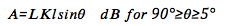

Some issues related to W/V-band propagation are primarily due to the effects of the Earth’s atmosphere and their impact on system availability and margin. Distortions due to multipath propagation do not affect the millimeter wave. However, some atmospheric effects at the millimeter wavelengths are gaseous absorption, cloud attenuation, rain attenuation, and tropospheric scintillation. Gaseous absorptions are mainly due to atmospheric gaseous components (predominantly oxygen and water vapor) and typically have a small contribution to the total path attenuation in the W/V band [2]. Cloud attenuation at the W/V bands can contribute to significant loss (> 10 dB) [3]. Rain attenuation has the most dominant contribution to the total propagation loss when dealing with higher frequencies [4]. Troposphere scintillation is the rapid fluctuations in the refractive index of owing to turbulence and produces random fades and enhancements of the received signal amplitude [7]. This phenomenon can seriously affect satellite-earth links at frequencies above 10 GHz and at very low elevation angles (<=5 degrees).
Rain attenuation is the most significant propagation impairment for satellite communication systems operating in the W/V band frequencies [4]. The rain path attenuation is given by the following equation
The rainfall rate intensity, and the estimated frequency dependent coefficients k and ∝ for 71-76 GHz and 81-86 GHz can be obtained from Table 1 [6].
The chosen Satellite is present at 100.8ºW. The look angles for all the three locations are calculated and the worst case (horizontal polarization) rain attenuation estimates of these three locations are shown below.
Attenuation by gases for W/V bands is primarily caused by oxygen and water vapor. A method for predicting absorption due to atmospheric gases is given in [2]. Figure 1 shows the effect of oxygen and water vapor to wave propagation in different frequencies. The resonance of water absorption occurs at approximately 22 and 183 GHz, and absorption resonances for oxygen occurs at 60 and 120 GHz. Minimum attenuation occurs between these frequencies. To calculate the gaseous attenuation, the parameters are needed are elevation angle, operating frequency, altitude above sea level, and water vapor density, and the attenuation equation can be found in [2].
Cloud attenuation becomes increasingly important to consider for reliable satellite communications at frequencies above 10 GHz [1]. For clouds or fog consist of small droplets, less than 0.01 cm, the Rayleigh approximation is valid for frequencies below 200 GHz and it is possible to express the attenuation in terms of the total water content per unit volume [3]. The following equation can be used to obtain the attenuation due to clouds for a given probability:
where L is the total columnar content of liquid water (kg/m^2), Kl is the specific attenuation by water droplet (can be obtained in Fig. 2), and θ is the elevation angle.
Variations in the magnitude and the profile of the refractive index of the troposphere lead to amplitude fluctuations known as scintillations [5]. The magnitude of scintillation is affected by increase in frequency, decrease in elevation angle, and decrease in antenna beamwidth. Tropospheric scintillation can cause serious degradation in performance at low elevation angles (≤10o) and at frequencies above 10 GHz. Ionoshperic scintillation may be important at frequencies below about 6 GHz [7]. The scintillation fade depth for the time percentage p can be calculated by:
It is possible to obtain attenuation predictions according to predictive models based on ESA climatologic data banks and ITU recommendations. According to [7], the free-space path attenuations can be summed to atmospheric additional attenuation, AT¬, to obtain total link path loss: